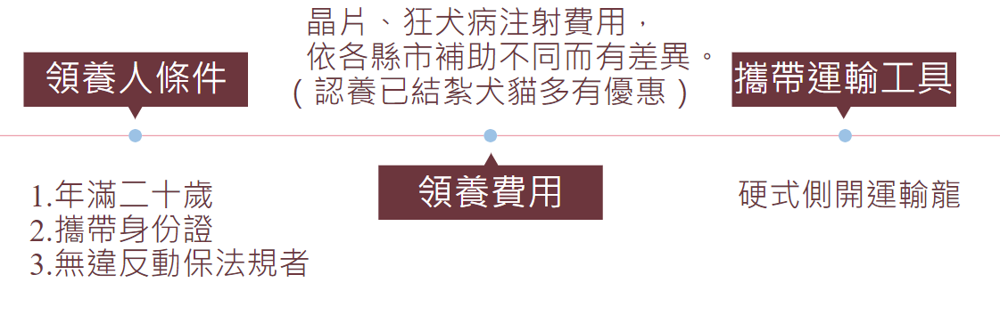

-貓咪領養事項-
新手養貓前需準備貓咪所需用品，領養當天攜帶外出籠＋身分證件（簽署認養需要）＋現金（晶片、疫苗費用）到收容所領養貓貓
1、先到收容所跟貓咪進行互動
到收容所跟貓咪進行互動並在志工帶領下看看有沒有貓願意親近你，互動中如果有看對眼便可以進行下一步。
2、到辦公室辦理認養手續
行政辦公室舔填寫領養切結書，上面會記錄貓咪的資料，行政人員會影印身分證件用來登記晶片。
3、施打疫苗、晶片
收容所會幫貓咪上網登記並植入晶片，還有施打狂犬疫苗。
4、填寫貓咪評估表
詢問飼主家是否有裝好門窗防護避免貓咪逃脫、目前經濟能力是否能應付貓咪將來相關的醫療費用等問題，用來評估飼主是否有足夠能力認養貓咪。
5、帶貓回家
最後通過以上流程，你就可以帶著心愛的貓咪回家
